Витрати
Документ → затвердження → підпис → виписка
Бухгалтер вносить акт чи рахунок, голова затверджує, платіж підписується КЕП, а виписка закриває документ і потрапляє у звіт будинку.
Для мешканців, правління та бухгалтерії
Мешканець бачить свій баланс і голосує з телефона. Правління вирішує справи за хвилини. Бухгалтер закриває місяць за кроками. Одні дані будинку — три зручні кабінети.


Справжні екрани застосунку · умовні квартири, люди й операції
Три ролі · спільний будинок
Баланс, оплата, лічильники, звернення, чат і голосування — у телефоні.
Справи дня, власники, збори, документи й підпис платежів — з одного екрана.
Банк, нарахування, документи, зарплата, звіти й закриття місяця — за кроками.
Мешканцю й співвласнику
Особисті розрахунки, новини будинку й участь у рішеннях. Без походів до правління за кожною довідкою.
Відкриваєте застосунок — і одразу бачите, чи є борг. Реквізити, QR-код і квитанції — за один дотик, оплата через Приват24 або monobank.
Чат будинку, звернення до правління, голосування, документи, лічильники, фінанси будинку й контакти служб.
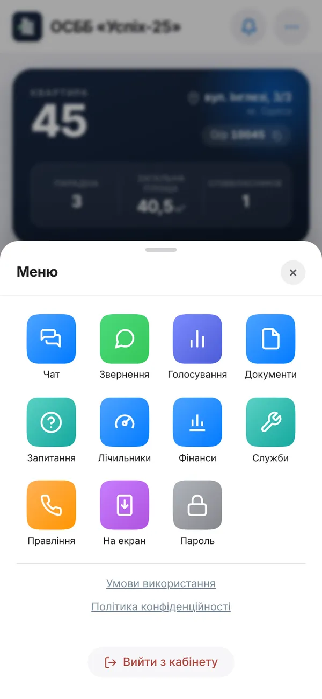
Спочатку люди й частки, нижче — один спільний комплект правовстановлюючих документів. Правильний список підтверджуєте одним дотиком.
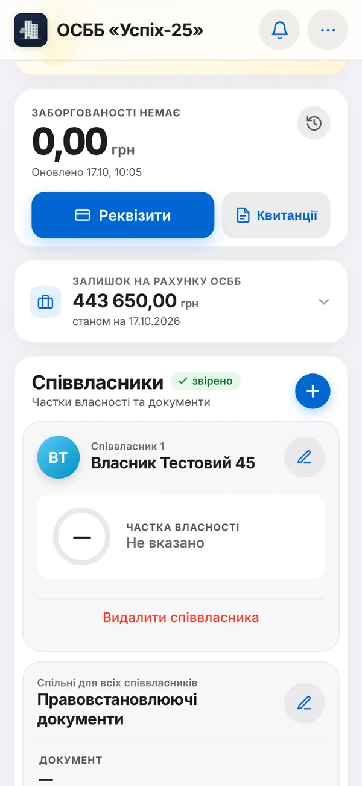
Голові й членам правління
Звернення, власники, збори, документи й фінансові рішення — в одному робочому просторі. Команда бачить свої справи, а мешканці — результат.
Платежі на підпис, документи витрат на затвердження, нові звернення, збори й стан коштів будинку — на першому екрані.
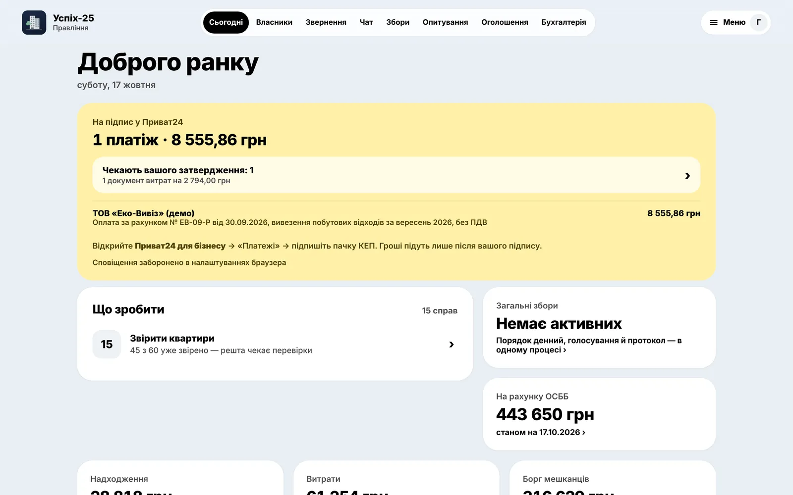
Довідник квартир і приміщень: площі, рахунки, співвласники, частки й документи. Видно, скільки квартир звірено і кому нагадати.
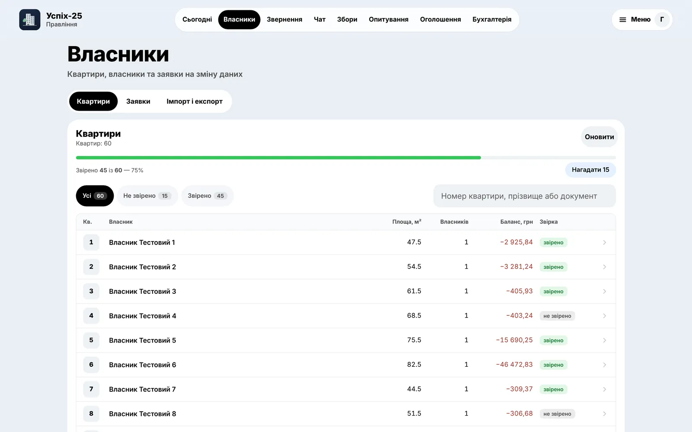
Нижня панель із головними розділами й сповіщення про платежі на підпис. Рішення — там, де ви є.
Бухгалтеру ОСББ
Виписка, нарахування, документи, зарплата й звітність повʼязані між собою. Рутину робить застосунок, рішення — за вами.
Скільки рішень чекає, що на підписі в голови, найближчий строк ДПС і залишок на рахунку — на одному екрані.
Операції ПриватБанку приходять щогодини. Система впізнає квартиру за призначенням і платником — вам лишається «Так» або «Інше рішення».
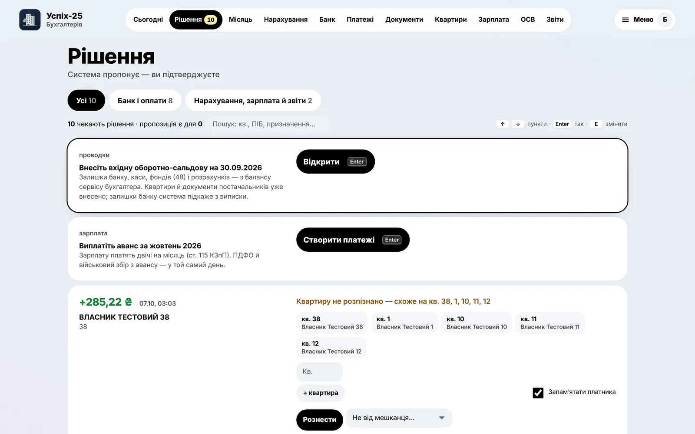
Перетягніть XML із M.E.Doc чи «Вчасно», ZIP з ЕДО, PDF або фото — реквізити, суми й постачальник заповняться автоматично.
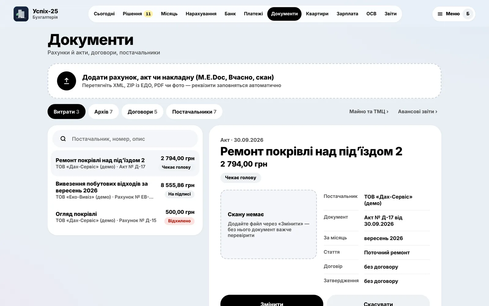
Створюєте платіж — він зʼявляється в Приват24 і чекає підпису КЕП. Реквізити підставляються з довідника, призначення складає система.
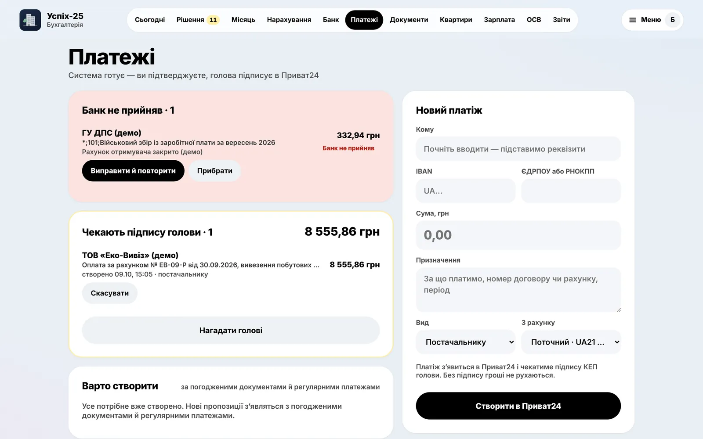
Табель, оклад, ПДФО 18%, військовий збір 5%, ЄСВ 22% — розрахунок для кожного. Аванс і розрахунок — двома виплатами.
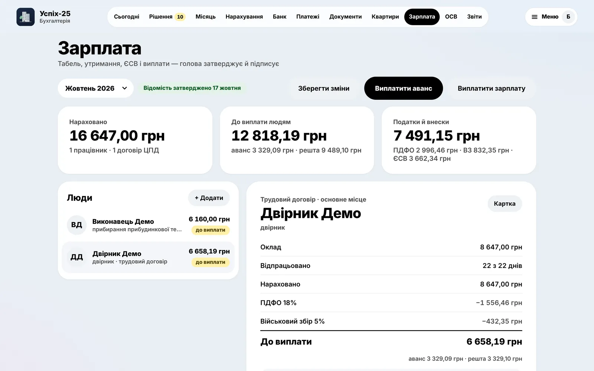
Податковий розрахунок із додатками Д1, 4ДФ, Д5: перевірили суми — завантажили XML у Електронний кабінет — додали квитанцію № 2.
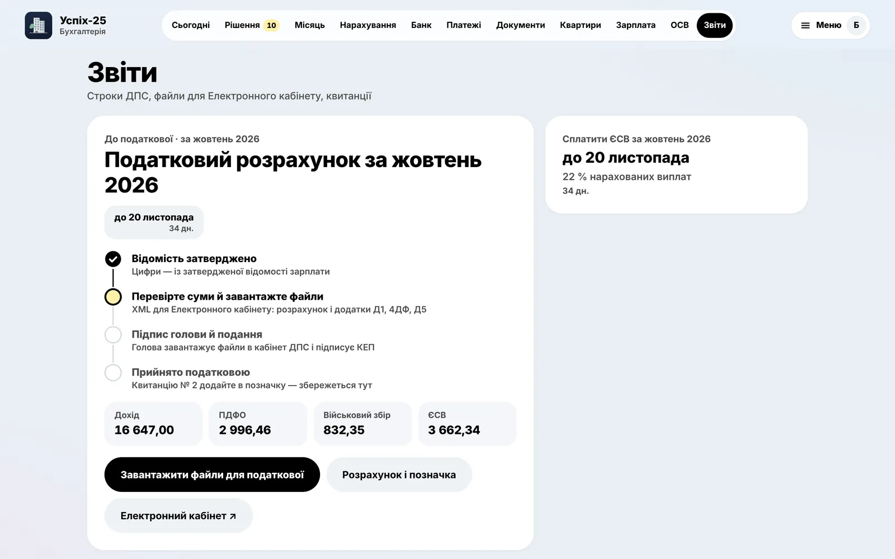
Нарахування → банк → документи → зарплата → перевірка обліку → закриття. На кожному кроці видно, що лишилось і чому.
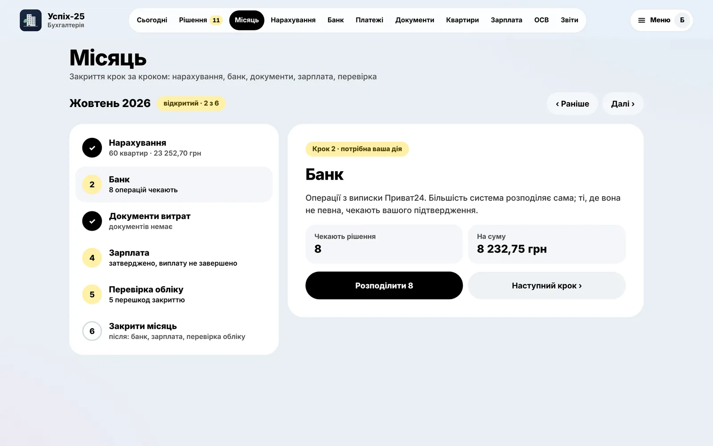
Борг чи переплата, історія з сальдо після кожної операції, довідка про стан розрахунків і акт звірки — у два кліки.
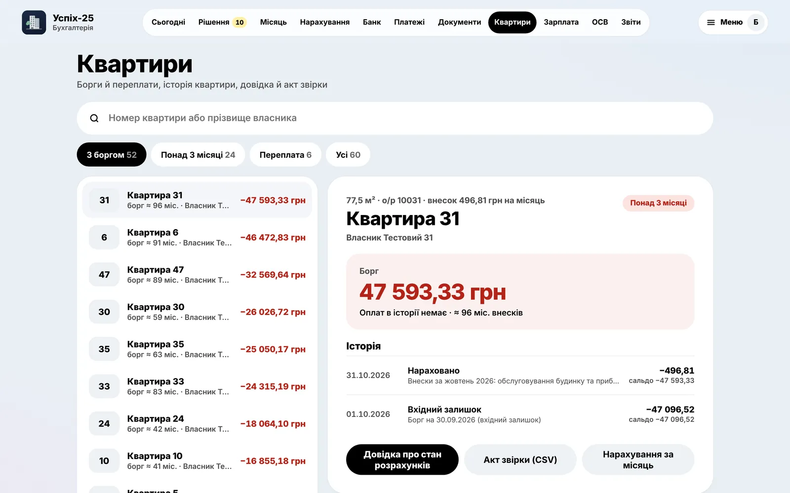
Дані працюють разом
Витрати
Бухгалтер вносить акт чи рахунок, голова затверджує, платіж підписується КЕП, а виписка закриває документ і потрапляє у звіт будинку.
Зарплата
Утримання й ЄСВ рахуються у відомості. Після затвердження — виплати, а дані йдуть у податковий розрахунок.
Збори
Порядок денний, електронні й паперові відповіді, підсумки за звіреним списком співвласників і опублікований протокол.
Безпечно за замовчуванням
Застосунок готує платіж, але не відправляє гроші сам: банк проводить його лише після підпису КЕП у Приват24.
Мешканець — лише свою квартиру й опубліковані дані будинку. Права правління й бухгалтера розділені за ролями.
Хто, коли й що змінив — у журналі. Закритий місяць захищено від звичайного редагування.
Працює в браузері на телефоні й компʼютері; на головний екран додається як застосунок — без магазину.
Запуск для вашого будинку
Застосунок показано на прикладі ОСББ «Успіх-25». Інший будинок потребує окремого налаштування бази, доступів, реквізитів і правил роботи.
Квартири, приміщення, власники, площі, парадні та особові рахунки.
Тарифи, складові внесків, залишки, кошторис і дата переходу на облік.
Повноваження правління й бухгалтера, рахунки ПриватБанку, реквізити ОСББ.
Тестові нарахування, виписка, рознесення й звірка — спершу в тестовій бухгалтерії.
Перед запуском
На екранах показана реалізація для цього ОСББ. Сторінка знайомить із можливостями для інших будинків. Запуск нового будинку — окреме впровадження з його базою, доступами та налаштуваннями.
Він працює у браузері. На iPhone можна додати його через «Поширити» → «На початковий екран», на Android — через меню браузера. Для сповіщень потрібні підтримка пристрою та дозвіл користувача.
Ні. Інтерфейси й доступ розділені за ролями. Мешканець працює зі своєю квартирою та опублікованою інформацією будинку. Службові операції доступні відповідним членам команди.
Ні. Бухгалтер створює платіж, який зʼявляється в Приват24. Підписує його голова КЕП. Фактична оплата підтверджується банківською випискою та повʼязується з документом.
Застосунок готує дані й XML-файли. Уповноважена особа завантажує, перевіряє, підписує та подає пакет в Електронному кабінеті ДПС. Версія пакета, статуси й квитанції зберігаються у розділі звітності.
Так. Є друк бланків, внесення паперових голосів кожного співвласника, електронні відповіді від квартири та формування підсумків. Електронний підпис співвласника ще не підключений; порядок юридичного оформлення голосів визначає ОСББ.
Є інструменти імпорту бази й фінансових даних, введення залишків та звірки історії. Перед робочим запуском потрібна перевірка форматів, сум і звʼязків. Прямий імпорт файла банківської виписки поки не підключений.